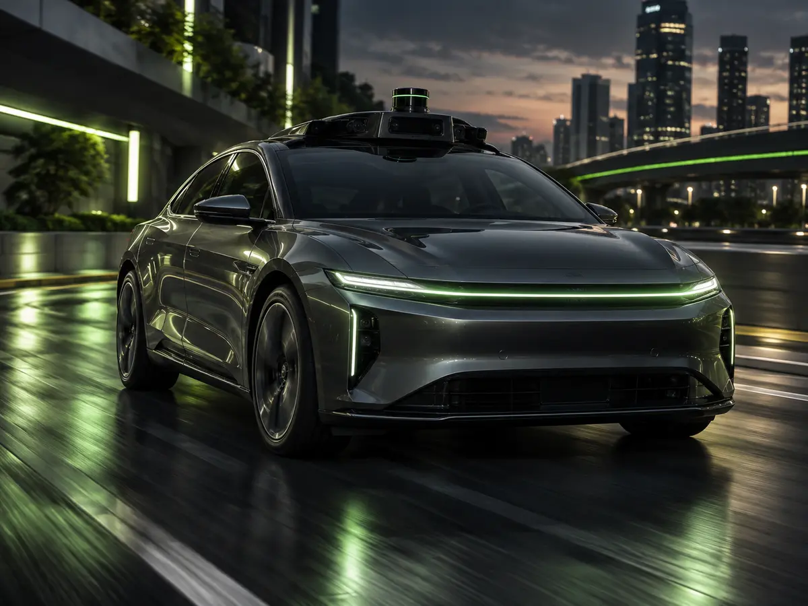
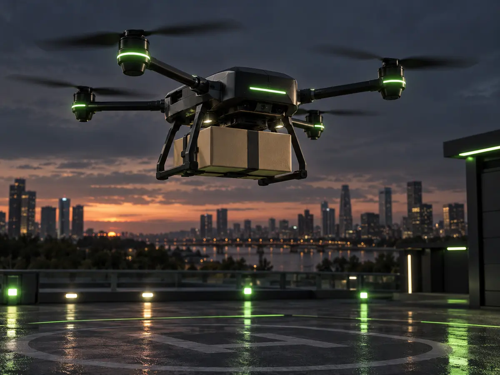
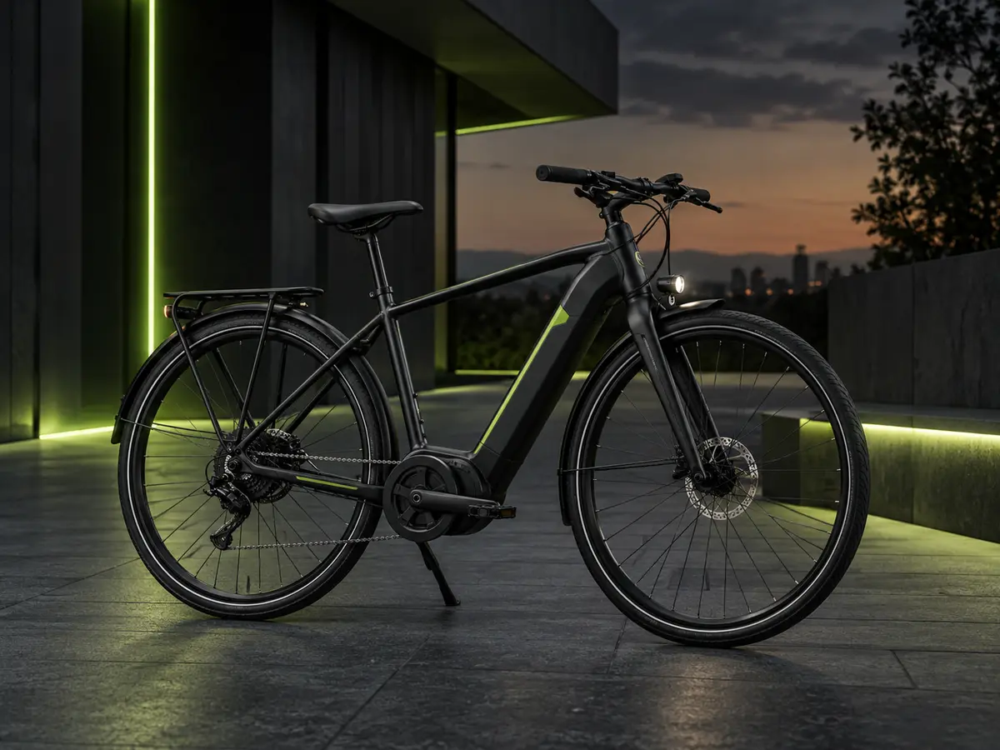
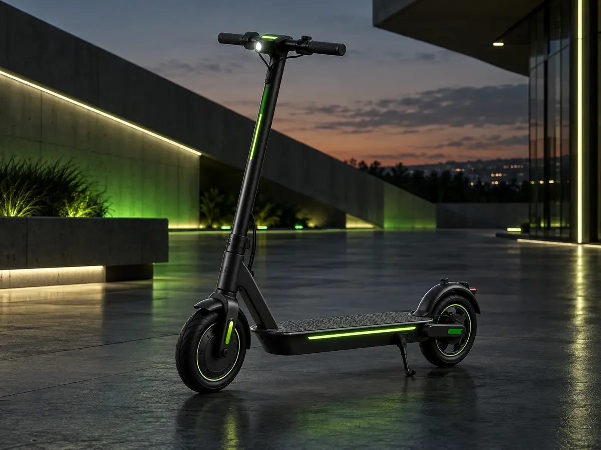
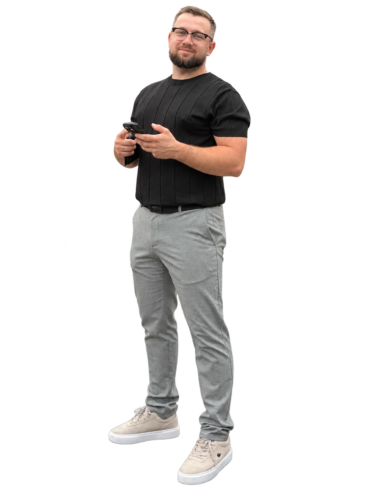

Автомобілі на автопілоті
Автономні поїздки з використанням камер, сенсорів і цифрового керування.
Безкоштовна онлайн-презентація
Дізнайся, як долучитися до проєкту зі смартфона, звідки формується дохід і що потрібно для старту. Презентація українською — доступ у Telegram.

Мобільність / Бізнес
Від автономних поїздок до доставки останньої милі — різні формати електромобільності працюють як одна екосистема.
Автономні поїздки з використанням камер, сенсорів і цифрового керування.

Швидка безпілотна доставка невеликих вантажів у місті.

Практичний транспорт для міста, кур'єрів і щоденних поїздок.

Компактний формат для коротких маршрутів і шерінгу.
Три прості кроки
Натисни кнопку на сайті — відкриється мій Telegram-бот.
Бот покаже актуальну дату та збере твою реєстрацію.
Розберися в моделі, умовах і ризиках та постав запитання.

Про спікера
Партнер компанії · ведучий презентації
Я — партнер компанії, яка розвиває напрям електромобілів на автопілоті, електричних дронів, самокатів та велосипедів у США й Дубаї. Допоможу розібратися, як працює проєкт з електротранспортом, які є можливості доходу та умови участі.
Від ідеї до розуміння
Як у бізнес-моделі поєднуються оренда електротранспорту й послуги доставки та яку роль відіграють компанія, клієнти й учасники проєкту.
Формати участі, умови та ризики. Що варто з'ясувати перед тим, як ухвалити власне рішення.
Роль партнера, побудова команди та системний підхід до залучення людей у проєкт.
Кому буде корисно
Коротко про головне
Ні. Онлайн-презентація безкоштовна, а дату та доступ ти отримаєш у Telegram-боті.
Ні. Мета презентації — показати, як працює проєкт, які є формати участі та що варто перевірити перед власним рішенням.
Електротранспорт, джерела доходу в бізнес-моделі, варіанти участі від $100, партнерський формат, умови та ризики.
Актуальну дату презентації та реєстрацію бот покаже після натискання «Розпочати» в Telegram.